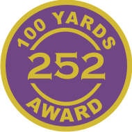
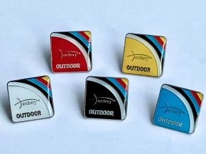
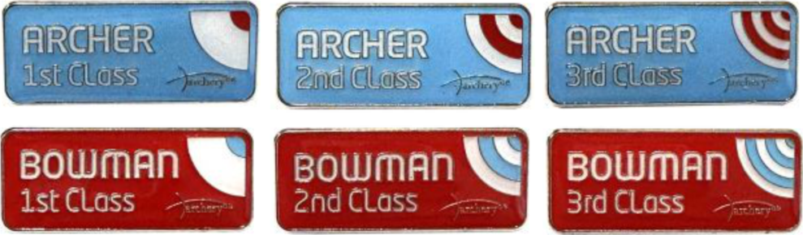

These are the most common types of progress classifications used today.
Click on the buttons to learn more.
These are a great way for beginners to track their progress. 252 rounds are 36 arrows on a 122cm target face using Imperial (5-zone) scoring. You can only claim one 252 score per day and this needs to be the first round shot (this can be part of a longer round). You are allowed 6 sighter arrows prior to scoring the round. To claim the badge you need to submit three scores (see below for the score requirements), if you achieve the maximum score of 324 then you can claim the badge immediately without submitting three scores.
The Archery GB Progress Awards Scheme is for new and current archers who wish to boost their skills and knowledge. The scheme is a great motivator, encouraging archers to go further in the sport while having fun – with certificates and badges awarded for achievement along the way. The nice thing about the awards is that it doesn’t matter which bowstyle you use, all archers are welcome. It also doesn’t matter about your gender as there’s not a separate scheme for women and men. There are five badge colours you can receive – White, Black, Blue, Red and Gold – each colour depicting a particular skill level, and you can gain them in any order you like. So, if you have a particularly good session and get the scores for a Red or Gold before you’ve received your White? Then that’s perfectly fine. You just can’t claim more than one badge from one set of scores.
Classifications are important to all archers because they are the best indication of where you are in terms of scoring ability, and provide a benchmark for levels of improvement. There are nine different classification levels available to all archers, which are grouped into three sets of three. An archer starts off with the Archer tier, with 3rd Class, 2nd Class and 1st Class awards. They then move up to the Bowman tier, again with 3rd Class, 2nd Class and 1st Class, and then finally the Master Bowman tier, where the naming gets a little more fun with Master Bowman (MB), Grand Master Bowman (GMB) and Elite Master Bowman (EMB).
